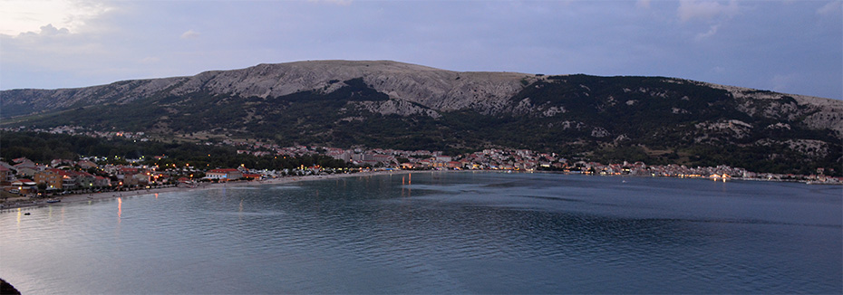
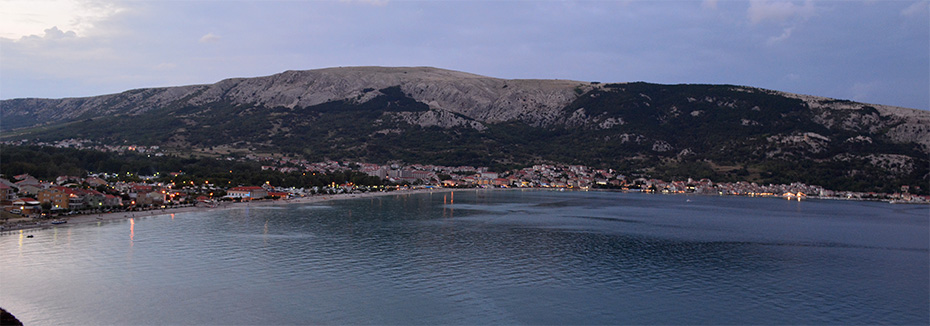
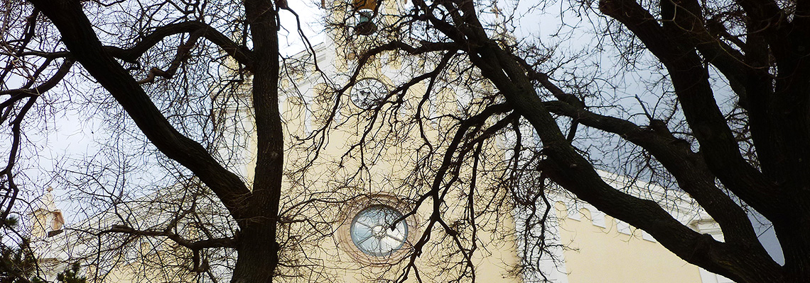
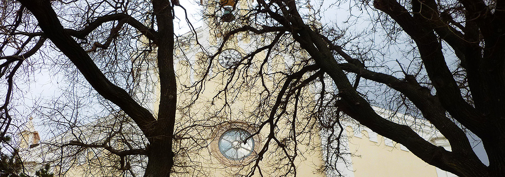
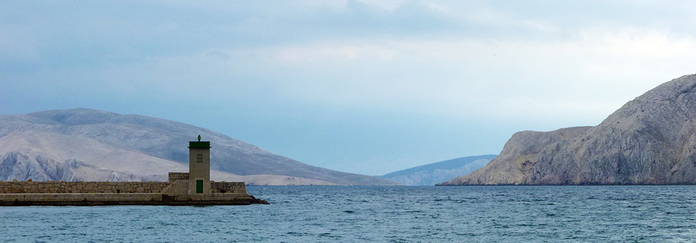
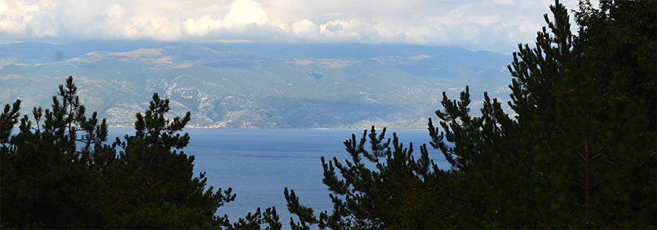
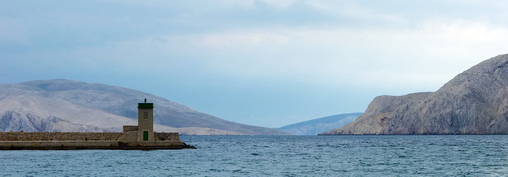
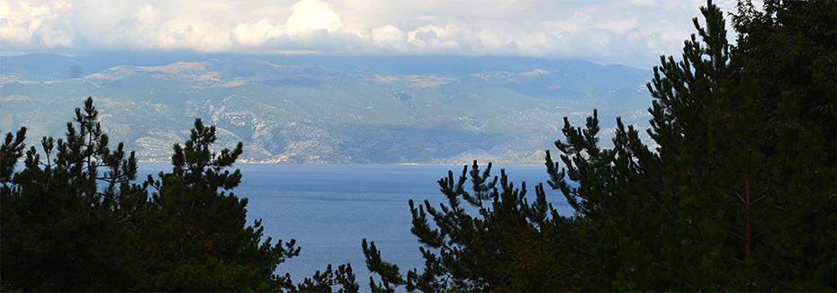

Baska Glagolitic Alphabet Trail is composed of sculptures in the form of Glagolitic letters. Walking around town one can often run up to some of 35 monuments.
Baska Tablet is one of the most precious monuments of Croatian people and language, dating from the early 12th century. Written in Glagolitic, it demonstrates sovereignty of Croatian King Zvonimir who, with this charter, gave land to Saint Lucija in Jurandvor.
Remains of ancient mosaic can be found in the Chapel of St. Marko, a romanesque chapel built 1514. Attractive sites are basilica from 5th century as well as a town church from the beginning of the 15th century, decorated with altarpieces of Celestin Medovic.
The Heritage Museum shows the ethnographic collection of area around Baska, it can be visited in the summer months in the afternoon hours.
Familiarise youself with Adriatic underwater life in Baska Aquarium with a collection of more than 100 Adriatic fishes, and 400 species of mussels and snails

 


 



 


